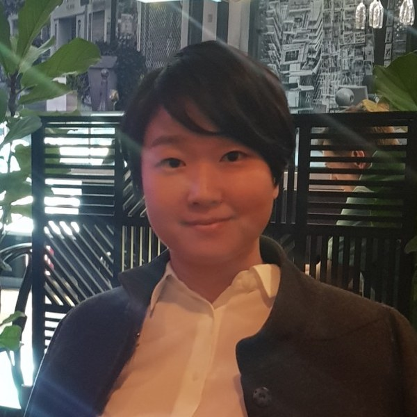

Hyoeun Lee
Clinical Assistant Professor
Department of Statistics
University of Illinois Urbana-Champaign
About
I am a Clinical Assistant Professor in the Department of Statistics at the University of Illinois Urbana-Champaign, where I also serve as an academic advisor for the master's program and mentor undergraduate research projects.
My research is in mathematical finance. I work on high-frequency algorithmic trading and market microstructure, with a focus on optimal order placement and execution in limit order books. I model order flow with jump and Hawkes processes and solve the resulting stochastic control problems. I also work with students on forecasting economic and financial time series, most recently electricity day-ahead prices, using statistical, deep learning, and hybrid models.
I received my Ph.D. in Statistics from Purdue University in 2018, advised by José E. Figueroa-López and Raghu Pasupathy. Before that, I studied mathematics at KAIST.
Research Interests
- Mathematical finance: high-frequency algorithmic trading, market microstructure, optimal placement in limit order books, order flow modeling with jump processes, stochastic control
- Stochastic processes and probability
- Stochastic optimization
- Time series analysis: financial and energy time series, machine learning and deep learning methods for forecasting